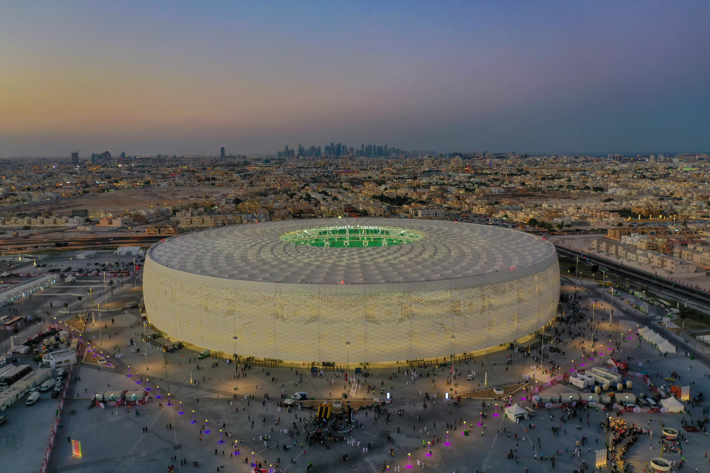
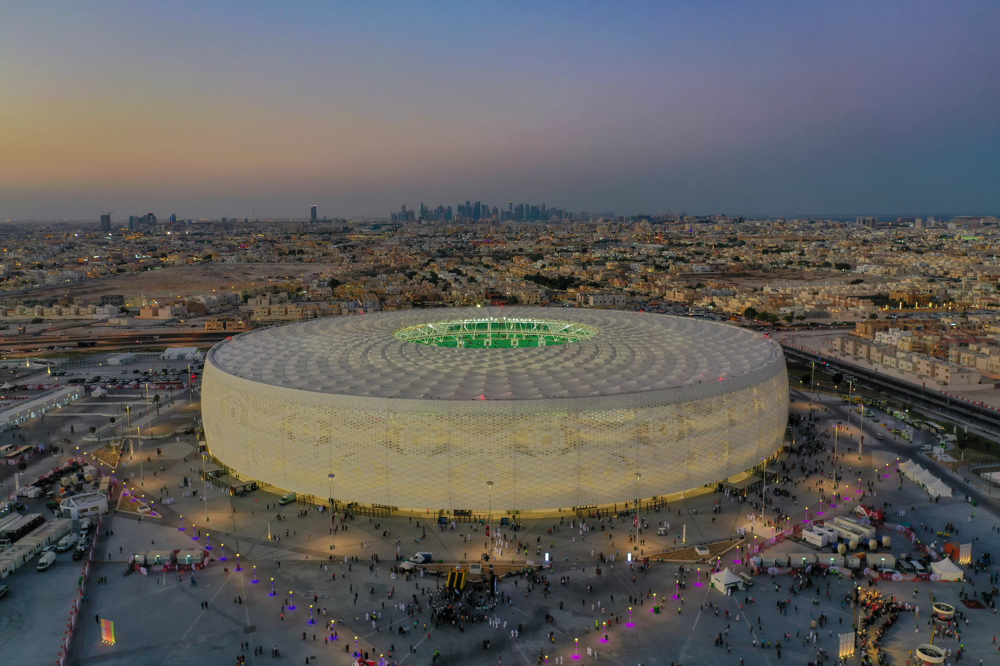
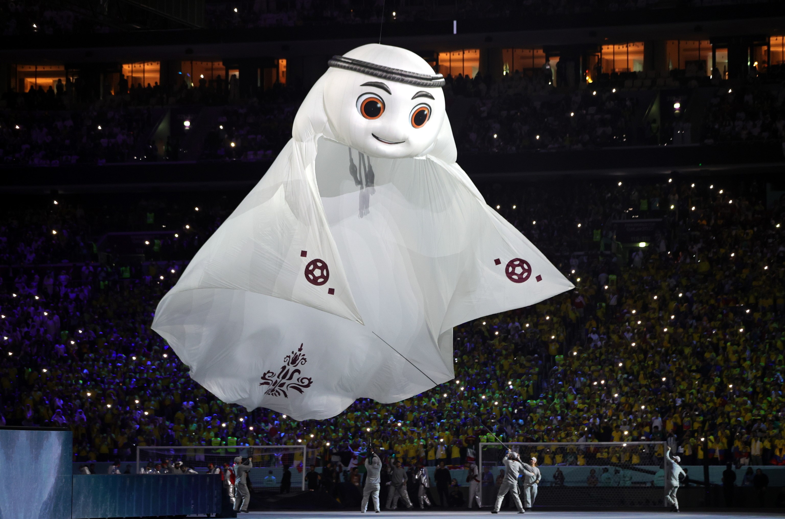
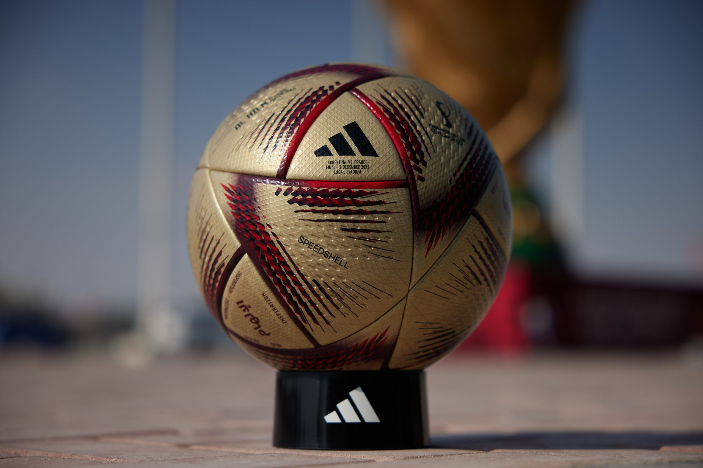

La Copa Mundial de la FIFA, también conocida como Copa del Mundo o Mundial, es el torneo internacional más importante de fútbol masculino a nivel de selecciones nacionales. Se celebra cada cuatro años desde 1930, excepto en 1942 y 1946 debido a la Segunda Guerra Mundial. El torneo consta de dos etapas principales: una fase de clasificación en la que participan más de 200 selecciones nacionales y una fase final que se lleva a cabo durante aproximadamente un mes en una sede previamente determinada. A partir de la edición de 2026, participarán 48 equipos en la fase final.
El Mundial 2022 en Qatar presentó estadios impresionantes y futuristas, con diseños únicos y tecnología avanzada. Desde el majestuoso Estadio Internacional Khalifa hasta el sostenible Estadio Al-Thumama, cada recinto dejó una huella imborrable en la historia del fútbol.
 

La mascota oficial del Mundial 2022 en Qatar fue "Fahad Al-Bayt", una representación de un león con aspecto futurista y elegante. Inspirado en la rica herencia cultural del país, esta encantadora mascota simbolizó la valentía y el espíritu competitivo de los equipos participantes, creando un vínculo especial con aficionados de todo el mundo.
El balón oficial del Mundial 2022 en Qatar se llamó "Sakinah". Diseñado por Adidas, este balón presentaba una combinación de colores inspirada en los paisajes desérticos del país anfitrión. Con tecnología de vanguardia, su aerodinámica y precisión proporcionaron emocionantes partidos y momentos inolvidables durante el torneo.
